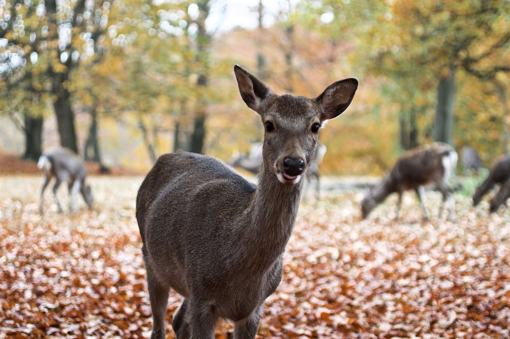
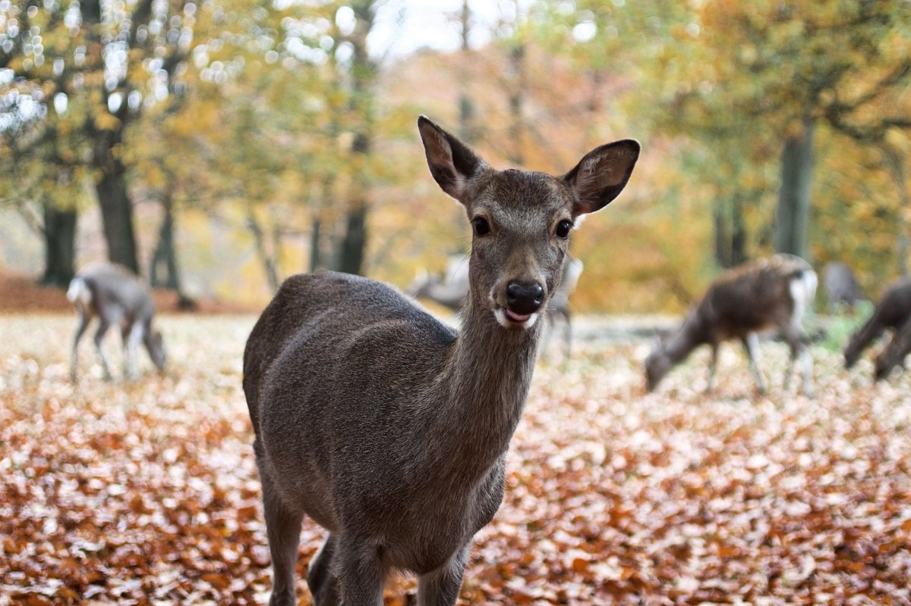

Tag børnene med til hygge i dyrehaven! Kigger du ud på efterårsvejret og tænker at vejret kun bliver mørkere samt at kulden nærmer sig? Hvilke aktiviter kan vi egentlig lave med vores børn og unge nu? JO! Kom og tag en tur i dyrehaven i århus lige ved marselisborgskoven. Her kan du sammen med børnene fodre en hjort og børnene kan lege i de store mængder af nedfaldsblade. Der er mange gode madpakkesteder hvor man kan side og nyde omgivelserne. Tjek lokationen og dagen vejr herunder. Husk: Der findes ikke dårligt vejr kun dårlig påklædning!
 

Dagens vejr
Temperaturen er: ˚